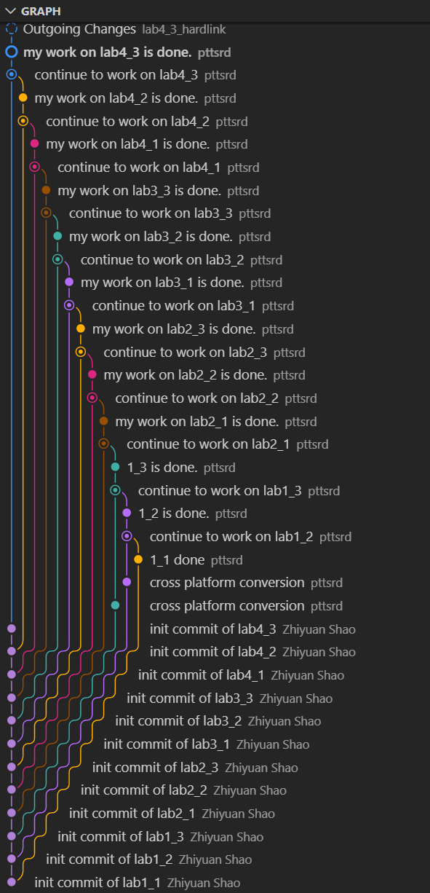

开始之前发一下牢骚，这门课的课堂总觉得不得劲，感觉讲的没什么激情。
0、从CPU到操作系统内核

这门课之前我们已经在logisim中捏了一个五段流水线的CPU，支持20多条简单指令，支持多级中断、重定向、分支预测等等功能。
简单回想一下CPU流程：
取指 - 译码 - 执行 - 访存 - 写回
CPU结构：
PC、程序ROM、寄存器堆、ALU、数据RAM
PC一开始为0，指向ROM中第一条指令。指令如何来的？格式是riscv规范规定的。指令如何翻译的？根据其中的部分字段，经过一个转换，输出到各种信号如jal、jalr、bge、MemToReg。根据这些信号继续之后的阶段。
更早，我们学了汇编和程序链接。简单回想一下C程序的一生：
源码 -> 汇编程序 -> 机器码 -> 代码段/数据段 -> elf/pe
我们的CPU是可以跑一些简单的程序的，比如冒泡排序。但我们的程序和标准的程序的区别在哪？
- 我们的程序既定直接在ROM中，固定从0地址开始。
- 我们的程序独占CPU，跑完return别的子程序才能使用。
- 我们的程序可以使用所有我们实现的指令，没有限制。
- 我们的程序没有堆栈等程序段的概念，读写数据完全有我们编写的汇编程序决策。
其实想一想，这个框架基本上也很完善了。假设我们的指令已经实现完全，再找几个聪明的家伙想办法组织程序，已经相当可以了。但是聪明的家伙可能也想偷懒，
- 汇编程序太难写了，想办法弄点高级语言。
- 程序一多，怎么组织顺序是个问题。
- RAM数据、文件管理等等问题也随之而来。
- 有些机器指令不能让一般人用。想用得去找管理员代劳。
- ……
需求增加了，大家抱着脑袋想解决方案。想来想去，发现很多都是组织和管理层面的问题，在裸机之上，要建立一套组织管理系统，满足各路程序的需求。随着人们不断完善，慢慢发展成了现在的操作系统。
操作系统的本质是分工和分权，正如公司的组织架构一样。CPU是公司的生产线，程序是员工，操作系统是管理层。管理层负责协调各个员工的工作，分配资源，处理异常情况，确保公司高效运转。员工不能随意操作生产线，必须通过管理层的授权和协调，确保生产线的稳定和安全。员工只需要专注于自己的工作，不用担心资源分配和异常处理的问题。
一、机器态
我们先把目光聚焦在裸机：
五段流水线中，我们的代码段是固定的ROM，数据段是固定的RAM，堆栈并没有涉及，中断是硬件级的。
实际机器上，显然我们要给内存分区，一部分用来存放代码，一部分用来存放数据，一部分用来存放堆栈等等。中断程序显然在代码那部分内存中。
比如说运行的程序想要打印一个字符，理论上它可以直接操作IO端口，但是这样太麻烦了，程序员不想管这些细节。于是就有了系统调用的概念，程序通过一个特殊的指令（ecall）触发一个 异常，CPU跳转到中断处理程序，内核根据程序传递的参数完成打印字符的功能，然后返回用户程序继续执行。是的，我们在五段流水线中实现过这个功能，只不过我们的显示器是7段数码管而已。还记得实验中ecall的参数吗，系统调用号0x22在a7寄存器中，参数在a0中。

内核的基本功能之一：系统调用。
程序加载到内存中，本质是加载该程序的代码段和数据段到内存的指定位置，然后设置PC指向代码段的入口地址，堆栈指针sp指向堆栈区域的顶端。那么首先，代码段和数据段放在哪里呢？当然是不能放在和内核一样的地方了，否则程序一运行就把内核覆盖掉了。我们需要给内核和用户程序划分不同的内存区域。内核其实也是程序，也需要代码段和数据段，还有堆栈段。程序与程序之间，公用的是CPU，但我们要注意寄存器，在程序切换时要保存现场，恢复现场。
那么问题来了
现场保存在哪里？内核区域还是用户程序区域？
请你在此处闭上眼睛，把自己想象成一位操作系统设计者，花几分钟思考一下这个问题。
假设我们把现场保存到用户程序区域，那么当用户程序恶意修改了保存现场的内存区域怎么办？比如，低调的黑客修改了sp寄存器的值（sp寄存器指向程序的堆栈区域的顶端），让它指向了别的程序的内存区域，读取了别的程序的现场数据，甚至修改了别的程序的现场数据。这样的系统你敢用吗？
假设我们把现场保存到内核区域，上面的问题就不存在了。用户程序无法访问内核区域的内存，无法修改保存现场的内存区域。这样就安全多了。系统内核就像一位公正的法官，确保每个程序都在自己的内存区域内运行，互不干扰。
也就是说，我们要把程序现场保存到内核程序的堆栈区域。比如说中断发生时，CPU自动切换到内核模式的过程：读取sscratch寄存器的值（内核堆栈顶端地址），把当前sp寄存器的值（用户程序堆栈顶端地址）保存到内核堆栈中，然后把sp寄存器设置为sscratch寄存器的值，切换到内核堆栈，保存所有通用寄存器的值到内核堆栈中。中断处理程序执行完毕后，恢复所有通用寄存器的值，从内核堆栈中恢复sp寄存器的值，切换回用户程序堆栈，继续执行用户程序。
sscratch寄存器用于在用户模式和内核模式之间切换堆栈指针。比如：当系统启动时，操作系统会将sscratch寄存器设置为内核堆栈的顶端地址。当发生中断或异常时，CPU会自动将当前的堆栈指针（sp寄存器）保存到sscratch寄存器中，然后将sp寄存器切换到内核堆栈的地址。当中断处理完成后，CPU会从sscratch寄存器中恢复原来的堆栈指针，继续执行用户程序。
还需要注意的是中断代理。RISCV内核态并不是被设计成天生就能处理所有中断的，内核也不过是一个程序嘛，内核是CEO，真正的大权在硬件手里。内核要处理中断也需要“君权神授”。如何授予呢？是寄存器mideleg和medeleg硬件标记的。前者决定哪些中断可以被内核处理，后者决定哪些异常可以被内核处理。那么，一个最基本的内核，应该授权哪些中断给内核处理呢？软件中断、定时器中断、外部中断。这些中断是操作系统必须处理的中断。软件中断用于进程间通信（虽然我们实验一中没有实现多进程，但后面的实验要用到），定时器中断用于时间片轮转调度（虽然我们实验一中没有实现调度），外部中断用于处理IO设备请求。
我们实验中是这样做的
1 | // macros used in following two statements are defined in kernel/riscv.h |
我们把SSIP（软件中断）、STIP（定时器中断，比如操作系统的时钟）、SEIP（外部中断，比如IO设备中断）中断授权给内核处理，把取指对齐异常、取指页错误、断点异常、加载页错误、存储页错误和用户态ecall异常授权给内核处理。这样，内核就可以处理中断和异常了。
理解以上内容，我们就明确了 机器态下，我们需要完成以下任务：①指定栈底的地址；②设置中断向量表地址；③授权中断和异常；④跳转到内核态。最终目的是跳转到内核态，开始执行S-mode代码。
这部分代码在kernel/machine/*下实现。
1. 指定栈底地址
提问：这个栈是给谁用的？
A：机器态 B：内核态 C：用户态
你想，这个简单，一开始的当然是给机器态用的。
那么，机器态为什么需要栈？或者说，机器态用栈干什么？真的需要栈吗？
（你开始思考）
你看了一下上面说的机器态下需要完成的任务：
授权中断和异常，这个过程需要用栈吗？嗯，不需要，这个过程就是写寄存器而已。
跳转到内核态，这个过程需要用栈吗？嗯，不需要，这个过程就是修改 mstatus寄存器和 mepc寄存器而已。
嗯，中断向量表是在什么段？代码段。但是，中断处理程序需要用栈吗？会的，中断处理程序也可能会调用函数，也可能会有局部变量，也可能会有递归调用，这些都需要栈来支持。
所以，机器态需要栈吗？需要。那么，机器态的栈应该放在哪里呢？
实际上，机器态的代码非常简单，只有两个目的：设置中断向量表地址，以及跳转到S-mode的配置工作，即使中断处理程序也非常简单，不会有复杂的函数调用和局部变量，所以其实很直接，手动指定一个合适的地址即可。
2. 设置中断向量表地址
中断向量表地址是通过mtvec寄存器设置的。mtvec寄存器有两个字段：base和mode。base字段指定中断向量表的基地址，mode字段指定中断处理方式。我们这里使用直接模式（mode=0），即所有中断都跳转到同一个地址处理。中断处理程序根据 mcause寄存器的值判断具体的中断类型，然后调用相应的处理函数。在本实验中，我们把中断向量表地址设置为 mtrapvec.c中的 mtrapvec函数的地址，此函数中，我们在保存程序现场、恢复机器态寄存器后，调用 handle_mtrap函数，在 handle_mtrap函数中根据 mcauseswitch到处理具体的中断case。
3. 授权中断和异常
授权中断和异常是通过 mideleg和 medeleg寄存器实现的。上面已经提到。
4. 跳转到内核态
这里需要多个步骤：
允许机器态中断：设置
mstatus寄存器的MIE位为1。规定下一个特权级为
S-mode（内核态）：设置mstatus寄存器的MPP位为01。MPP即Machine Previous Privilege，表示上一个特权级别。在RISC-V中，有三种特权级别：用户态（U-mode）、内核态（S-mode）和机器态（M-mode）。当发生异常或中断时，CPU会自动切换到机器态，并将当前的特权级别保存到MPP位中。通过设置MPP位为01，我们告诉CPU在执行mret指令时切换到内核态。设置
mepc寄存器为内核入口地址（s_start函数地址，即内核的入口点）。执行
mret指令，跳转到内核态。该指令会将程序计数器（PC）设置为mepc寄存器的值，并根据MPP位切换到内核态。提问：mret会恢复现场吗？
mret只负责切换特权级别和跳转到指定地址，不会恢复寄存器的值。恢复寄存器的值需要在内核入口函数中手动完成。
二、S-mode内核态

现代操作系统一般具有以下基本功能：
系统调用接口：提供用户程序与内核交互的接口。
中断和异常处理：响应硬件中断和软件异常。
内存管理：分配和回收内存，管理虚拟内存。
进程管理：创建、调度和终止进程。
文件系统：管理文件和目录，提供文件读写接口。
设备管理：管理硬件设备，提供设备驱动程序.
现在你是公司的CEO，你需要管理公司的日常运作（内存管理、进程管理、文件系统等）。你的员工（用户态程序）通过向你提出请求（系统调用）来完成他们的工作。你需要确保公司的资源得到合理分配，并处理各种突发事件（中断和异常）。
初创阶段的公司，功能不需要太复杂，先实现最基本的功能即可，比如：
- 办公区域（内存管理）：粗略的划分内存区域，satp=0，直接使用
物理内存，不用实现页表等复杂功能。 - 部门协调（进程管理）：公司实际就两个人（内核和用户程序），实现简单的上下文程切换，不需要实现调度算法。
至于文件系统和设备管理，可以先不实现，等公司发展壮大了再说。
我们仅需要考虑的问题是：中断和异常处理如何实现？
虽然这部分我们在机器态中讲过，但是内核态的中断和异常处理要有所不同。我们看看实验中的进程的数据结构
1 | typedef struct trapframe_t { |
可以看到，内核为每个进程维护了一个 trapframe结构体，用于保存进程的寄存器状态、内核堆栈指针、内核陷阱处理程序指针和用户程序计数器等信息。当发生中断或异常时，内核会保存当前进程的寄存器状态到 trapframe中，然后切换到内核堆栈，执行内核陷阱处理程序。处理完成后，内核会从 trapframe中恢复进程的寄存器状态，继续执行用户程序。
现场包括哪些内容呢？ICS上我们学过，现场包括所有通用寄存器的值、程序计数器（PC）、堆栈指针（SP，riscv中已包括在通用寄存器中）的值等。所以trapframe中有 riscv_regs regs和 epc字段。
那么问题来了
为什么要给每个进程记录kernel_sp和kernel_trap呢？中断处理程序不是通用的吗？
（你开始思考）
若使用同一个内核堆栈，那么当进程A和进程B都发生中断时，若中断程序等待IO阻塞，内核会切换处理B的中断。这样会导致进程A的中断处理程序的内容被进程B的中断处理程序覆盖掉，导致进程A的中断处理程序无法正确执行。
再比如多核系统的情况，每个核可能同时处理不同进程的陷阱，如果所有进程共用一个内核堆栈，那么当多个进程同时发生陷阱时，内核会切换到同一个内核堆栈来处理它们的陷阱。这样会导致不同进程的陷阱处理程序的内容相互覆盖，导致陷阱处理程序无法正确执行。
正确的做法是为每个进程分配独立的内核堆栈。当进程A发生中断时，内核切换到A的内核堆栈，保存A的寄存器状态到A的 trapframe中，执行中断处理程序。处理中断时，如果需要切换到进程B，将中断现场保存到进程A的PCB中一个特定结构 cpu_context(本实验中未实现)，然后从B的PCB中恢复其之前保存的上下文到CPU寄存器中。
kernel_trap呢？
这其实是个设计选择， 对于 PKE 这个简单系统: 只有一个 CPU，只有一个/少量进程，handler 永远是同一个函数，完全可以用全局变量或硬编码！ 但是为了让设计更通用化，便于将来扩展多 CPU、多进程等功能，设计成每个进程都有自己的 kernel_trap 指针，这样每个进程可以有不同的中断处理程序。这也是xv6等操作系统的设计思路，经过实践的验证。
既然trapframe里已经记录了kernel_sp和kernel_trap，为什么还要在process里记录kstack呢？
因为本实验中trapframe是共享的，所有进程的trapframe指针都指向同一个trapframe结构体。所以，trapframe中的kernel_sp和kernel_trap字段实际上是当前运行进程的内核堆栈指针和内核陷阱处理程序指针，每次switch_to()时都会更新这两个字段。所以需要在process结构体中记录kstack字段，表示该进程的内核堆栈地址。
以上我们对trapframe和process结构体进行了分析，理解了其必要性，那么充分性如何呢？
我们看看内核态下 进程相关的任务：
- 保存现场：将当前进程的寄存器状态保存到
trapframe中的riscv_regs和epc字段。 - 处理中断和异常：调用相应的处理函数，需要用到函数入口：
kernel_trap，堆栈：kernel_sp。 - 恢复现场：从
trapframe中恢复进程的寄存器状态，继续执行用户程序。 - 切换进程：保存当前进程的现场，加载下一个进程的现场，切换到下一个进程。
可以看到，trapframe和process结构体已经包含了完成这些任务所需的所有信息，所以是充分的。
代码解读kernel/*
结合kernel.lds和代码，我们可以看到内核的内存布局：


使用 riscv64-unknown-elf-readelf -W -a obj/riscv-pke查看make后的代理内核，可以看到符号等信息。